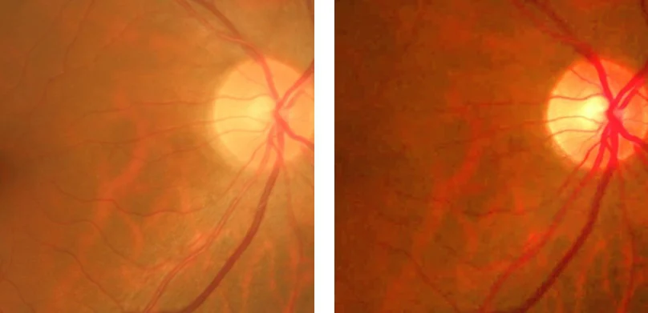
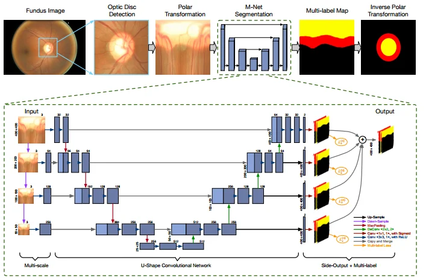
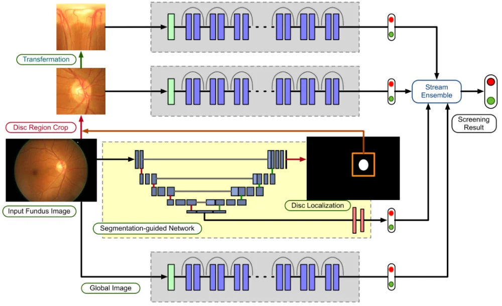
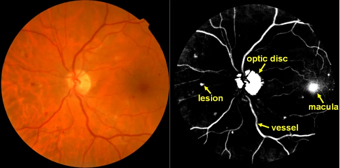
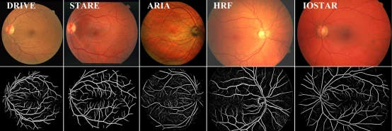
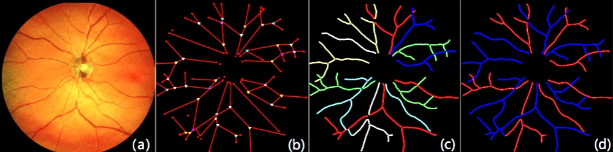
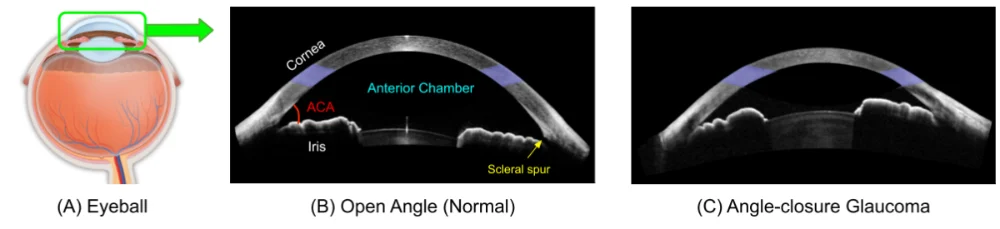
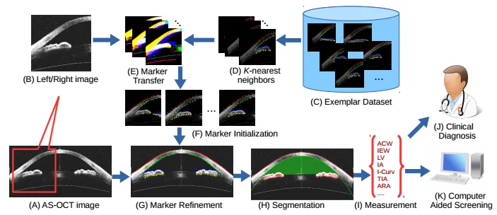

“iMED中国”一年内发表8篇医疗影像领域顶级期刊会议文章
——世界智能眼科影像研究中心开始向宁波慈溪转移
2018年6月6日是第23个全国“爱眼日”。中科院宁波慈溪医工所所长，刘江高级研究员领导的“iMED中国”团队长期致力于基于人工智能眼科疾病辅助诊断研究。近几年海外引进和培养了程骏、赵一天等为代表的新生代科研力量，并在青光眼、病理性近视、年龄相关性黄斑变性、糖尿病性视网膜病变等眼科疾病诊断方面有众多突破性成果。
在过去的1年时间内，“iMED中国”团队在医学影像领域的顶级期刊IEEE Transactions on Medical Imaging（IEEE-TMI）上先后发表（接收）了5篇文章，在领域顶级会议MICCAI（全称Medical Image Computing and Computer-Assisted Intervention也斩获了3篇论文。其中赵一天副研究员得到了2018年MICCAI会议的young scientist award（年轻科学家奖）的提名。
值得一提的是，在青光眼自动筛查诊断方面，“iMED中国”团队程骏研究员和赵一天副研究员分别针对视网膜眼底图像处理和疾病自动诊断提出了一系列人工智能处理算法，得到了业内认可，并且连续10年不断刷新青光眼疾病诊断世界记录。
青光眼的自动筛查诊断非常依赖于视网膜图像中的视盘和视杯（optic disc / optic cup）的提取，临床证明可以通过杯盘比（CDR）来诊断是否患有青光眼疾病。由于受到成像设备以及眼睛内部疾病（白内障等）的影响，视网膜图像常出现模糊，甚至掩盖部分细节，这给眼底图像的分析如视盘和视杯的分割带来了挑战。为此，“iMED中国”团队程骏研究员提出用人类晶状体对光照的衰减和散射的组合模型来描述这种视网膜图像的衰退过程。基于该模型，程骏研究员提出了一种新的能保持结构的导向视网膜图像滤波（SGRIF）算法来进行视网膜图像增强，改善视网膜图像的对比度（如下图所示）。此外，探索了SGRIF算法对后续视网膜图像处理和分析任务的益处。分别将该算法应用于基于深度学习的视杯分割和基于稀疏学习的杯盘比（CDR）计算，经过SGRIF算法处理后的视网膜图像能够实现更精确的视杯分割和CDR测量。该文章发表在IEEE-TMI上（Structure-preserving Guided Retinal Image Filtering and Its Application for Optic Disc Analysis, IEEE Transactions on Medical Image (TMI), 2018, in press）。

SGRIF算法对视网膜图像滤波前后对比（左处理前；又处理后）
“iMED中国”程骏研究员和“iMED新加坡”付华柱博士共同开发一种基于深度学习的视网膜图像视盘与视杯区域提取算法。该方法基于U型深度学习图像分割框架，增加了多尺度输入、多标签输出等模块，适用于多类别区域分割任务。在多个青光眼监测数据库上，该算法获得了当前最佳性能。该文章发表在IEEE TMI上（Joint Optic Disc and Cup Segmentation Based on Multi-label Deep Network and Polar Transformation, IEEE Transactions on Medical Imaging (TMI), 2018.）由于杯盘比测量方法严重依赖图像分割的准确度，并且无法深度挖掘眼底图像的视觉特征信息。为此，我们又引入深度学习技术来获取额外的图像关联信息，以此来从眼底图像本身直接实现青光眼疾病的筛查。他们提出了一种新型的基于视盘区域特征的集成深度网络（Disc-aware Ensemble Network, DENet）。在不同尺度、不同模态下，整合全局眼底图像与视盘区域图像相关信息，通过多个子网络从不同角度挖掘多层次视觉特征表达，再将多个子网络进行集成，生成最终的青光眼筛查结果。在两个青光眼数据库（SCES和SINDI数据库）上均取得了理想结果，实验结果领先于已有算法。程骏研究员和付华柱博士将此研究成果发表在IEEE TMI上(Disc-aware Ensemble Network for Glaucoma Screening from Fundus Image, IEEE Transactions on Medical Image (TMI), 2018, in press)

基于深度学习的视网膜图像视盘和视杯区域提取算法

基于视盘区域特征的集成深度网络
赵一天副研究员也提出了一种基于显著性分析的视网膜疾病的病灶检测方法。在眼底视网膜图像中，临床医生往往对血管，黄斑，视盘及病灶区域感兴趣，这些区域也符合了计算机视觉中对显著性分析的定义：形状、纹路、颜色跟其周围区域差异很大，因此在视网膜图像中，血管，黄斑，视盘及病灶区域也可以称之为显著性区域。赵一天博士结合了超像素算法分割，对超像素的紧凑性和唯一性进行特征计算，将血管，黄斑，视盘及病灶区域从视网膜图像中提取出来。并通过已有的血管，黄斑，视盘分割方法对它们进行去除，成功地获得了精准的病灶区域。此方法用在国际上公开的7个独立视网膜图像数据库中，利用单一的模型，对4种病灶进行提取，显著地体现了算法的遍历性优势，得到的评估结果与已有方法比较具有较大的提高。此文章在经过rebuttal（MICCAI等一些顶级计算机视觉会议审稿流程中特有的‘反驳’过程）阶段之后，得到了三个Area Chair的全票接收录用。(Uniqueness-Driven Saliency Analysis for Automated Abnormalities Detection with Application to Retinal Diseases, MICCAI, 2018)

左图是眼底视网膜图像；右图是显著性分析结果
同时，赵一天副研究员针对目前医学图像中的血管自动提取存在的问题和挑战，提出了一种基于对称滤波器的血管增强方法，对血管区域进行增强显示并做自动分割，以解决现有血管检测方法因对比度低和特征匹配不准确而导致的血管连通性低的问题，从而提高了细小血管的识别率。该方法能够应用于包括眼底彩照、眼底造影成像（FA）、核磁共振（MRA）、CT造影（CTA）等在内的多维度多模态医疗图像。它突破了医疗图像领域内对血管提取不准确，图像模态遍历性差等问题，在视网膜图像和MRA脑血管图像中均取得了很好的效果。该文章发表在IEEE-TMI上（Automatic 2-D/3-D Vessel Enhancement in Multiple Modality Images Using a Weighted Symmetry Filter, IEEE Transactions on Medical Imaging, 2018, 37(2):438–450.）。

基于对称滤波器的血管增强方法对视网膜血管进行增强显示
在以上血管分割的基础上，赵一天副研究员对血管形态进行了更深入的研究。医学研究表明，全身性疾病与视网膜血管畸变有着密切的关系，因此视网膜血管结构分析与动、静脉的自动分类对于疾病检测有着重要的研究意义。由于图像采集过程中的光照、移动、噪声等因素导致血管的结构分析以及动静脉自动分类十分困难，因此赵一天博士提出了一种基于血管网络拓扑结构的动静脉自动分类算法。该算法首次将Dominant Set Clustering这种数据聚类方法应用于动静脉分类，对原始数据进行了大幅度的降维操作。充分利用血管的连续性，在复杂血管网络中建立拓扑结构提取子血管树，并结合Dominant Set与投票机制实现子血管树分类。实验表明，所提出的算法在三个公开数据库（INSPIRE，DRIVE，VICAVR）中分别达到了91.0%，91.2%，91.0%的准确率。此外，分别标注了三个数据库（INSPIRE，IOSTAR，VICAVR）的拓扑结构金标准，不久将会公开供其他研究人员使用。依托此研究成果的论文得到了MICCAI会议的提早录用（提早录用比例：16%），并且得到了young scientist award（年轻科学家奖）的提名。今年MICCAI会议的录用率是30%左右。(Retinal Artery and Vein Classification via Dominant Sets Clustering-based Vascular Topology Estimation, MICCAI, 2018)

（a）原图（b）graph建立（c）拓扑结构建立（d）动静脉分类
另外，“iMED中国”团队在Optical Coherence Tomography (光学相干断层扫描，OCT)图像上也有重要研究成果。闭角青光眼是导致不可逆视觉损害的主要原因之一，一般通过测量前房角(ACA)得到确诊。而前房角的测量需要借助眼前节光学相干断层扫描(AS-OCT)成像设备。不同AS-OCT成像设备获得的图像在眼前节结构、形状、位置等方面可能存在较大差异，这无疑使后续的图像分析任务变得更加复杂。为此，“iMED中国”团队和“iMED新加坡”团队共同开发了一种数据驱动的眼前节结构分割、参数测量与闭角青光眼诊断方法，在采用Visante AS-OCT和Cirrus HD-OCT两种不同成像设备获得的数据集上，验证了该方法的有效性。该文章发表在IEEE TMI上。(Segmentation and Quantification for Angle-Closure Glaucoma Assessment in Anterior Segment OCT, IEEE Transactions on Medical Imaging, 2017, 36(9):1930–1938.)

（a）正常 AS-OCT 图像（B）与闭合性青光眼（C）示例
但是大部分已有的自动筛查算法都是依赖人工视觉特征来进行表述，并且忽略不同图像区域的特征。我们又引入深度学习技术来获取不同区域的图像关联信息，以此来从 AS-OCT图像本身直接青光眼疾病的筛查。为此我们提出了一种新型的基于多区域深度网络的 AS-OCT 青光眼筛查算法，该算法结合手工特征与深度学习特征，并融合全局信息与局部区域信息，直接生成青光眼疾病筛查结果。在Visante AS-OCT青光眼数据库上取得了最佳结果，实验结果领先于已有算法。该算法也被医学图像顶级会议 MICCAI 录用。（Multi-Context Deep Network for Angle-Closure Glaucoma Screening in Anterior Segment OCT, MICCAI 2018.）

数据驱动的眼前节结构分割、参数测量与闭角青光眼诊断方法